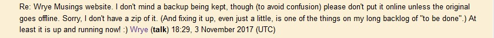

At this point I don't know exactly what content I want for this site however, I do want it to be a place where I can store my own Wrye Bash information. I also want this to be a landing zone for Wrye Bash related material. Currently there are several places you can get good Wrye Bash information, if you know where to look. Then there is the official Wrye Bash documentation. I don't feel comfortable copying the Wrye Bash documentation as a whole but I would like to offer other clarifications about Wrye Bash and it's usage.

I am particularity interested in hosting the wrye musings information as I hold it very dear. I would not want it to be lost. I have a backup of the site as much as I can and will host it at some point. For now though I am respecting Wrye's wishes while Wrye Musings is still on-line